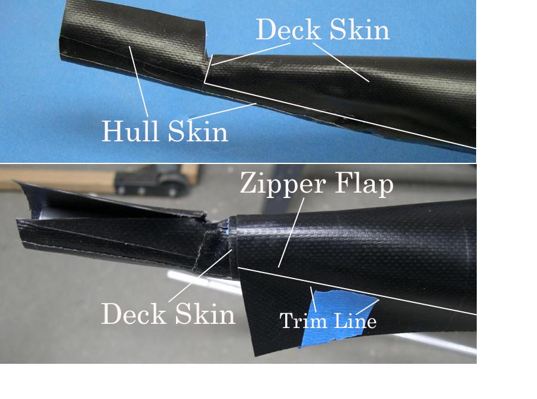

| Zipper to Stem Attachment ( 5 of 11 ) | Menu Previous Page Next Page |
|

Fiting the Flap - The zipper flap is fitted atop the deck with the front edge of the flap positioned at the front edge of the deck skin attached earlier. Near the front, the flap is marked for trimming with scissors to match the line of the deck. The zipper is "under" the flap during attachment to the deck.
|
|